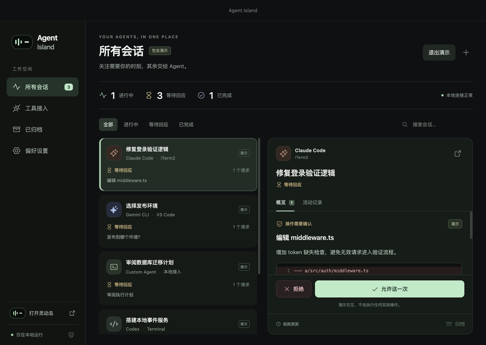

需要你，才展开。
平时安静停在屏幕顶部。悬停展开，或用快捷键唤起，待办与进度随时在眼前。
⌘ / Ctrl⇧Space
01 / A LITTLE LESS SWITCHING
不用反复打开终端确认进度。
一个地方，看见正在推进的任务，
也看见等待你回应的那一步。

查看所有会话的状态，在确认前看清命令与代码变更。
截图含演示数据 · 专用工具适配将逐步扩展平时安静停在屏幕顶部。悬停展开，或用快捷键唤起，待办与进度随时在眼前。
审阅命令、检查 diff、回答问题，或给执行计划留下反馈。重要决定，不必盲点「允许」。
了解审批流程选择显示器、贴边或浮动，调整透明度与提醒方式。小岛融入你的工作节奏。
02 / BRING YOUR OWN AGENT
先把通用接入做好，再逐个扩展。
通过 Node.js、Python 或本地 HTTP，
把自定义工具的状态带到桌面。
Claude Code、Codex、Gemini CLI、Cursor 等
专用自动适配，后续逐步推出。
ON YOUR MACHINE. IN YOUR CONTROL.
应用仅通过本机接口与 Agent 通信，
不上传会话、不接入遥测、不要求登录。
审批超时或连接中断，都不会自动批准。
03 / MAKE ROOM FOR FOCUS
从你熟悉的桌面开始。
下载预览版，打开应用中的「体验演示」，
感受任务、提醒与回应聚在一起的轻松。
Apple Silicon · M 系列芯片
下载 Mac 版x64 · 安装版与便携版
下载 Windows 版它是 AI Agent 的桌面状态与交互面板，不提供大模型或聊天服务。你的 Agent 继续在原来的工具里工作，小岛负责展示进度、收集审批和回答。
当前版本提供 Node.js、Python SDK 和本地 HTTP 接口，需要接入方发送事件。Claude Code、Codex、Gemini CLI、Cursor 的专用自动适配尚未提供。截图中的工具名称来自演示模式。
可以。小岛以置顶浮动窗口显示在屏幕顶部，支持贴边或浮动、多显示器选择。普通 Mac 显示器和 Windows 屏幕都能使用，不依赖物理刘海。
当前预览版可直接下载使用，无需注册 Agent Island 账户。你使用的 AI 服务、模型及其费用，仍由对应服务提供方决定。
Agent Island 不上传会话，也不设置遥测。它把收到的会话文本与操作预览保存在本机，默认保留 7 天，并在下次启动时清理过期记录。你接入的 AI 工具本身如何处理数据，以该工具的设置为准。